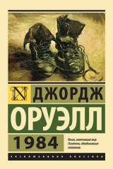
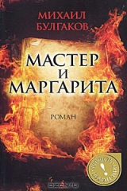
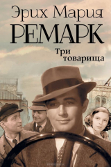
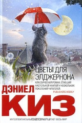
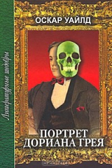

1. 451 градус по Фаренгейту
|
Мастер мирового масштаба, совмещающий в литературе несовместимое. Создатель таких ярчайших шедевров, как "Марсианские хроники", "451° по Фаренгейту", "Вино из одуванчиков" и так далее и так далее. Лауреат многочисленных премий. Это Рэй Брэдбери. Его увлекательные истории прославили автора не только как непревзойденного рассказчика, но и как философа, мыслителя и психолога. Магический реализм его прозы, рукотворные механизмы радости, переносящие человека из настоящего в волшебные миры детства, чудо приобщения к великой тайне Литературы, щедро раздариваемое читателю, давно вывели Брэдбери на высокую классическую орбиту. Собранные в этой книге произведения - достойное тому подтверждение. |
|---|---|
| 2. 1984  |
Своеобразный антипод второй великой антиутопии XX века - "О дивный новый мир" Олдоса Хаксли. Что, в сущности, страшнее: доведенное до абсурда "общество потребления" - или доведенное до абсолюта "общество идеи"? По Оруэллу, нет и не может быть ничего ужаснее тотальной несвободы... |
| 3. Мастер и Маргарита  |
Один из самых загадочных и удивительных романов XX века. «Мастер и Маргарита» – визитная карточка Михаила Булгакова. Более десяти лет он работал над книгой, которая стала его романом-судьбой, романом-завещанием. В «Мастере и Маргарите» есть всё: весёлое озорство и щемящая печаль, романтическая любовь и колдовское наваждение, магическая тайна и безрассудная игра с нечистой силой. |
4. Шантарам
|
Представляем читателю один из самых поразительных романов начала XXI века (в 2015 году получивший долгожданное продолжение – «Тень горы»). Эта преломленная в художественной форме исповедь человека, который сумел выбраться из бездны и уцелеть, разошлась по миру тиражом четыре миллиона экземпляров (из них полмиллиона – в России) и заслужила восторженные сравнения с произведениями лучших писателей Нового времени, от Мелвилла до Хемингуэя. Подобно автору, герой этого романа много лет скрывался от закона. Лишенный после развода с женой родительских прав, он пристрастился к наркотикам, совершил ряд ограблений и был приговорен австралийским судом к девятнадцати годам заключения. Бежав на второй год из тюрьмы строгого режима, он добрался до Бомбея, где был фальшивомонетчиком и контрабандистом, торговал оружием и участвовал в разборках индийской мафии, а также нашел свою настоящую любовь, чтобы вновь потерять ее, чтобы снова найти… |
| 5. Три товарища  |
Трое друзей - Робби, отчаянный автогонщик Кестер и "последний романтик" Ленц прошли Первую мировую войну. Вернувшись в гражданскую жизнь, они основали небольшую автомастерскую. И хотя призраки прошлого преследуют их, они не унывают - ведь что может быть лучше дружбы, крепкой и верной, ради которой можно отдать последнее? Наверное, лишь только любовь, не знающая границ и пределов. Прекрасная и грустная Пат, нежная возлюбленная Робби, рассеивает мрак бессмысленности его существования. Однако обретенному счастью угрожают отголоски все той же войны - существующие уже не только в памяти и сознании героев, а суровым образом воплотившиеся в реальность... Эта история раз и навсегда покорила сердца миллионов читателей по всему миру. На этой книге выросли поколения, ее давно раздергали на цитаты, неоднократно экранизировали и продолжают ставить на сцене. Ее хочется перечитывать снова и снова. |
| 6. Цветы для Элджернона  |
Сорок лет назад это считалось фантастикой. Сорок лет назад это читалось как фантастика. Исследующая и расширяющая границы жанра, жадно впитывающая всевозможные новейшие веяния, примеряющая общечеловеческое лицо, отважно игнорирующая каинову печать "жанрового гетто". Сейчас это воспринимается как одно из самых человечных произведений новейшего времени, как роман пронзительной психологической силы, как филигранное развитие темы любви и ответственности. Не зря вышедшую уже в 1990-е книгу воспоминаний Киз назвал "Элджернон, Чарли и я". |
| 7. Портрет Дориана Грея  |
«Портрет Дориана Грея» – одно из величайших произведений последних полутора столетий, роман, который пытались запретить, а автора осуждали за «непристойное поведение». Превращение прекрасного и невинного юноши Дориана в чудовище под влиянием гедонистических идей и циничных афоризмов лорда Генри – в романе, породившем культ вечной молодости. |
8. Маленький принц
|
«Маленький принц» — аллегорическая повесть, наиболее известное произведение Антуана де Сент-Экзюпери. Рисунки в книге выполнены самим автором и не менее знамениты, чем сама книга. Важно, что это не иллюстрации, а органическая часть произведения в целом: сам автор и герои сказки всё время ссылаются на рисунки и даже спорят о них. Уникальные иллюстрации в «Маленьком принце» разрушают языковые барьеры, становятся частью универсального визуального лексикона, понятного каждому. «Ведь все взрослые сначала были детьми, только мало кто из них об этом помнит» — Антуан де Сент-Экзюпери, из посвящения к книге. |
9. Над пропастью во ржи
|
Писатель-классик, писатель-загадка, на пике своей карьеры объявивший об уходе из литературы и поселившийся вдали от мирских соблазнов в глухой американской провинции. Единственный роман Сэлинджера, НАД ПРОПАСТЬЮ ВО РЖИ стал переломной вехой в истории мировой литературы. И название романа, и имя его главного героя Холдена Колфилда сделались кодовыми для многих поколений молодых бунтарей от битников и хиппи до современных радикальных молодежных движений. Культовый роман ХХ века в блестящем переводе Риты Райт-Ковалевой, ставшем классикой переводческого искусства. |
10. Вино из одуванчиков
|
Войдите в светлый мир двенадцатилетнего мальчика и проживите с ним одно лето, наполненное событиями радостными и печальными, загадочными и тревожными; лето, когда каждый день совершаются удивительные открытия, главное из которых — ты живой, ты дышишь, ты чувствуешь! «Вино из одуванчиков» Рэя Брэдбери — классическое произведение, вошедшее в золотой фонд мировой литературы. |
| форма | |
| домашние работы | |